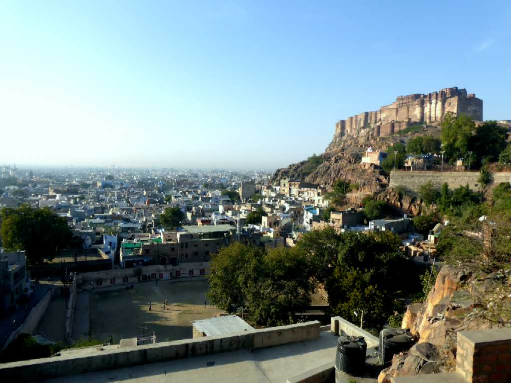
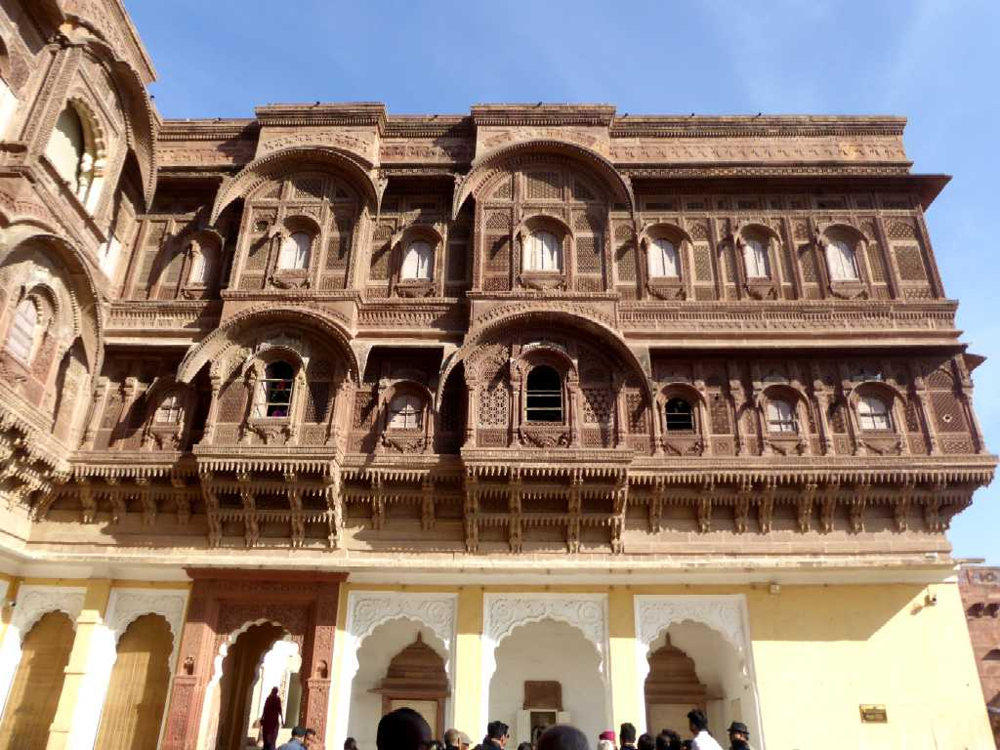
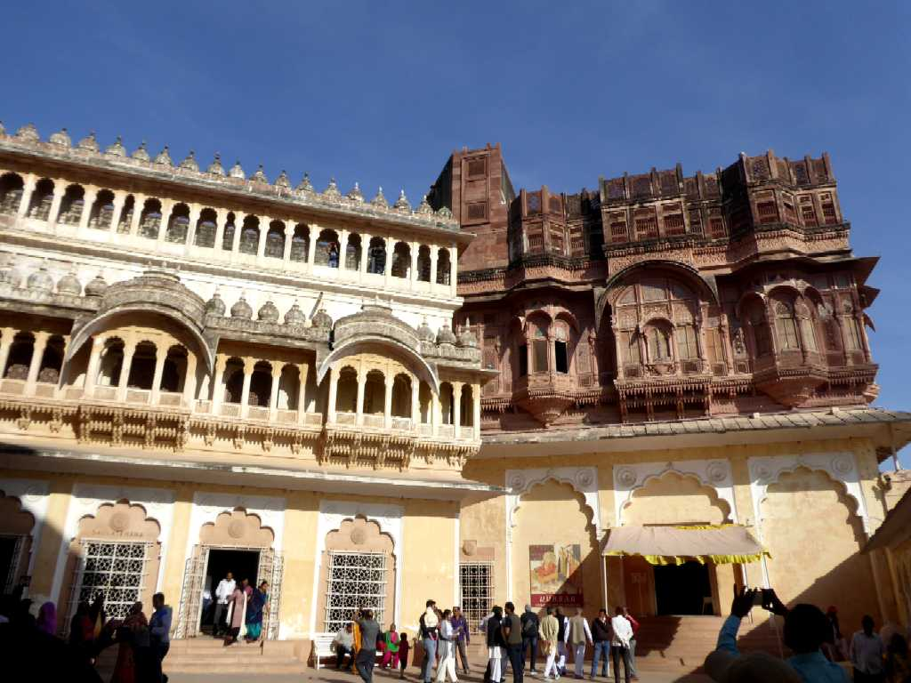
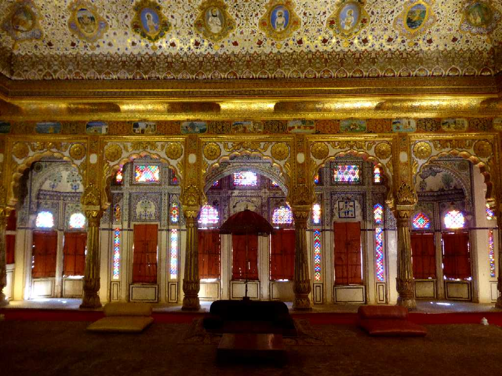
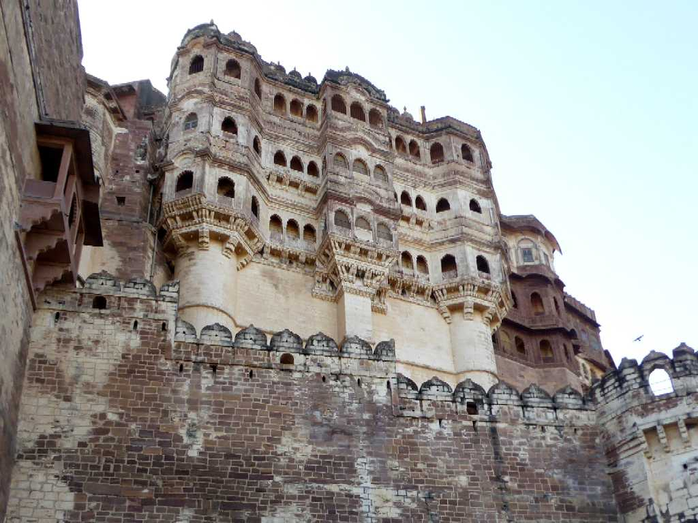
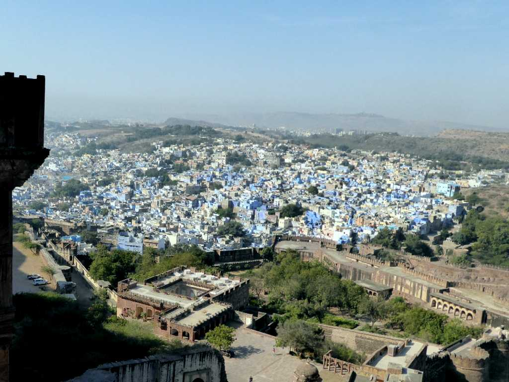
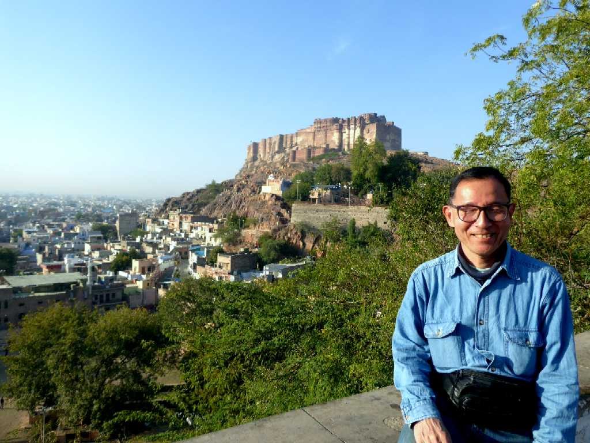

Mehrangarh Fort Blue City Jodhpur
ブルーシティーと云われるジョドプールのメヘラーンガル城塞

Palace Mehrangarh Fort
１４５９年にジョーダ王が高さ１２２ｍの岩山に４０ｍの城塞を築いた後１９世紀まで増改築が繰り返された

Palace Mehrangarh Fort

Throne Room Palace

Queen Palace

Blue City from Mehrangarh Fort View Jodhpur

January 28 2018 Mehrangarh Fort